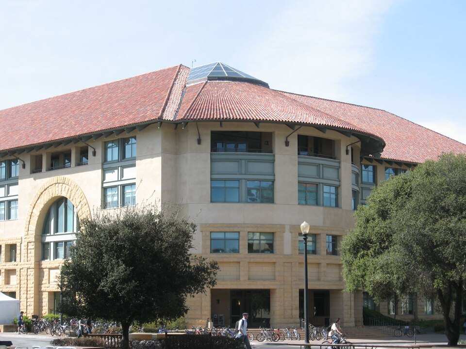
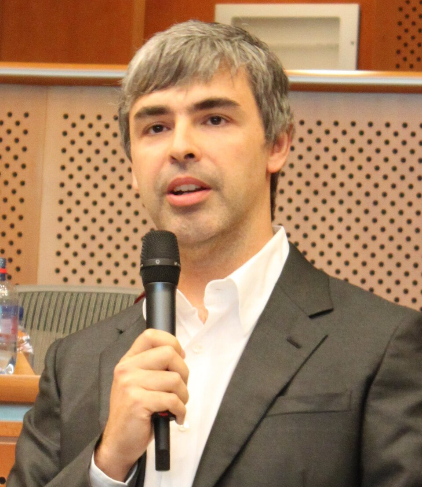
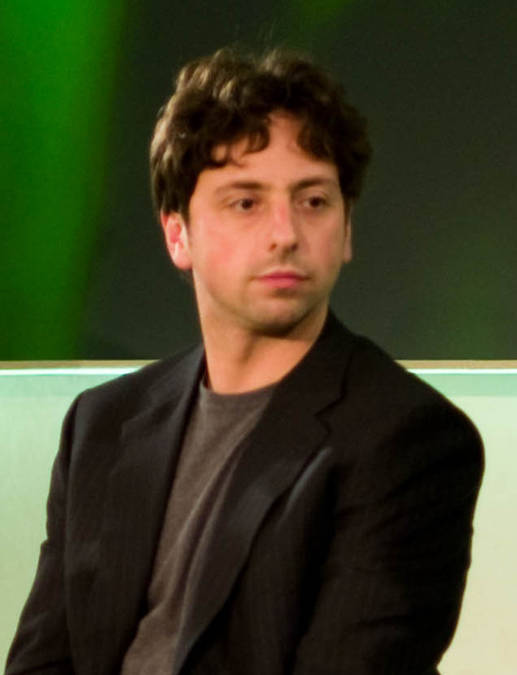
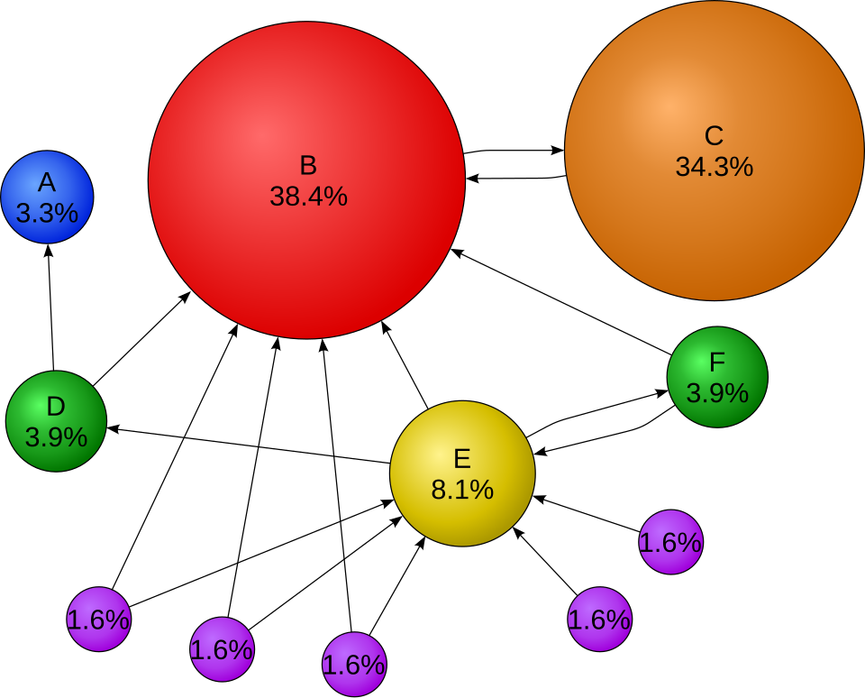
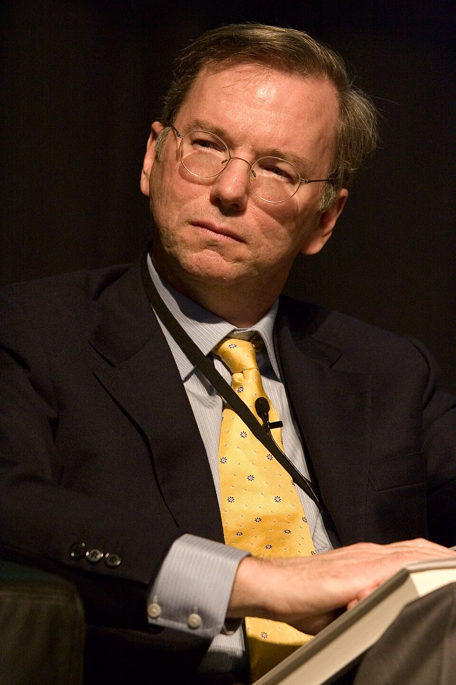
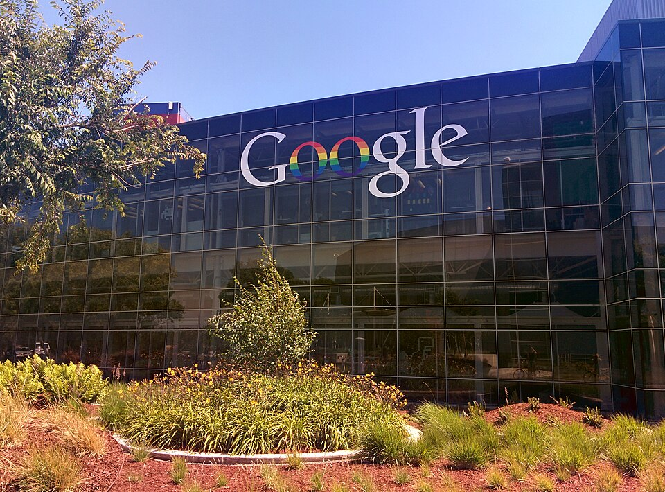
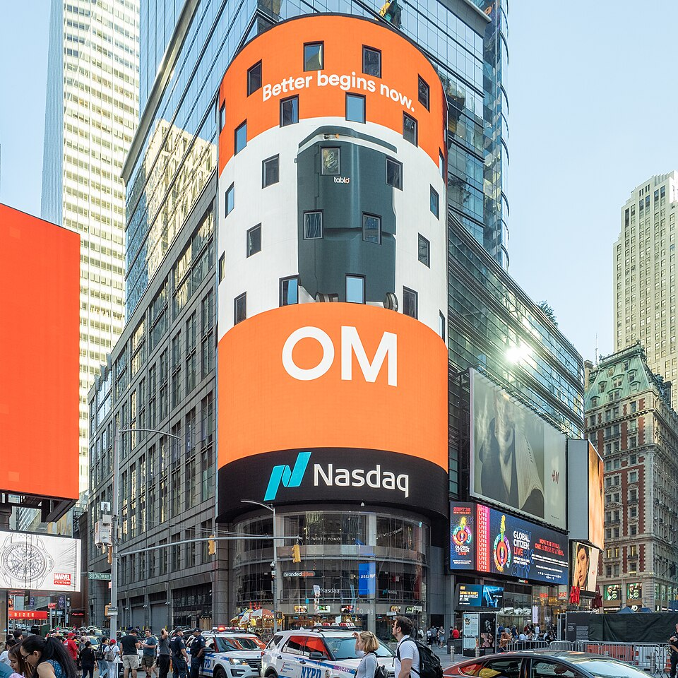

A busca vira negócio
De 1998 a 2004, em ordem e com as pessoas. Em 1998 os buscadores ordenavam contando quantas vezes a palavra aparecia na própria página, e quem repetia mil vezes no rodapé subia. São duas invenções, não uma: a que ordena a web, e a que cobra por essa ordem. Estes anos correm ao mesmo tempo que a bolha do episódio anterior. Quando o áudio pedir, aperte Próximo.
A carta de recomendação. Para saber quem é bom numa área que você não entende, não adianta ler o que cada um escreveu sobre si mesmo. Você olha quem recomenda quem. E uma recomendação vinda de alguém que todo mundo recomenda vale mais que dez de gente que ninguém conhece. Um detalhe fecha a ideia: quem escreve muitas cartas divide a própria reputação entre elas.

A pergunta trocada
A web já tinha o dado que resolvia o problema, os links, e ninguém usava. Não faltava peça; faltava olhar.


O PageRank

Um link é um voto, e o voto de quem recebe muitos votos vale mais. O problema é circular: pra saber quanto vale A, você precisa saber quanto valem os que apontam pra A. A saída é chutar que todas valem o mesmo e recalcular até os números pararem de mudar.
Dois cheques e uma garagem
A empresa não nasceu numa garagem: nasceu no laboratório da universidade e foi pra garagem depois de ter nome, dinheiro e registro. E um software grátis e muito usado é um problema de hardware.
Como se paga uma busca de graça

Os portais vendiam banner por exibição, do jeito da televisão. Não servia: o banner incomoda, quase ninguém clica, e não tem nada a ver com o que a pessoa quer naquele segundo. Numa busca, a pessoa diz o que quer, com as próprias palavras, na hora.
O leilão do Bill Gross
Vender posição na prateleira não era novidade: o supermercado e o jornal já faziam. O novo era leiloar essa posição em tempo real, a cada pessoa que chega. A empresa virou Overture e a Yahoo comprou em 2003.
O anúncio cobrado por exibição
Naquele ano a empresa faturou 19 milhões de dólares, pouco pro tanto de gente que já usava a busca. Trocar o modelo de cobrança não é vender melhor: é mudar o software.

Pagar só por clique
O preço: quem ganha paga o mínimo pra não perder pro anunciante de baixo, e não o próprio lance: é o leilão de segundo preço generalizado. A posição: sai do lance vezes a chance de alguém clicar. Anúncio bom e barato passa na frente de um ruim e caro.
De 19 milhões a 3 bilhões
O anúncio pagou as máquinas, as máquinas permitiram guardar mais dado, e mais dado deixou o anúncio melhor. É um ciclo que se alimenta, e ele não para mais.

A briga pela patente
A Overture processa o Google dizendo que o leilão era invenção dela. A briga se resolve dias antes da abertura de capital: o Google entrega 2 milhões e 700 mil ações pra Yahoo, dona da Overture, e fica com a licença pra sempre. O mesmo pagamento fechou uma segunda disputa.
A abertura de capital

A 85 dólares por ação, valendo perto de 23 bilhões, quatro anos depois do estouro do episódio anterior. E em vez do banco escolher quem compra antes, usaram um leilão aberto: leilão de novo. Por essa época passavam de 200 milhões de buscas por dia.
2004
A busca só responde quando você pergunta. Mas e se a pessoa não estiver procurando nada, e mesmo assim quiser ficar ali? O que a rede mostra pra quem chegou sem pergunta nenhuma?